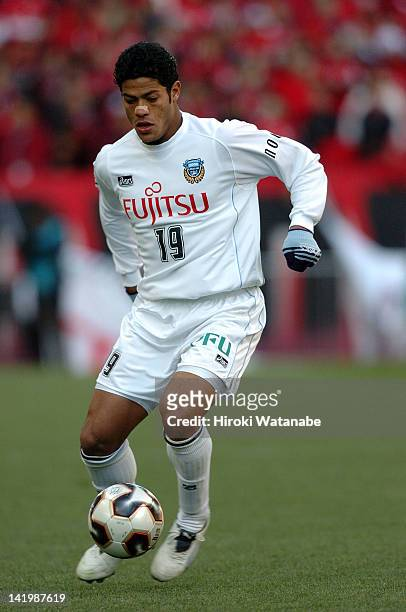
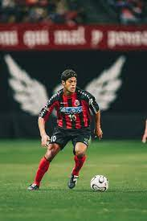
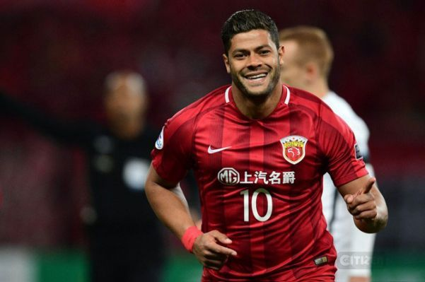

Chegou ao Vitória em 2003, ingressando nas categorias de base do clube.
No ano de 2004, foi promovido à equipe principal pelo treinador Hélio dos Anjos, tendo a oportunidade de atuar em duas partidas. Em sua estreia, corrida em 9 de setembro, Hulk entrou como lateral-esquerdo em uma partida contra o Fluminense, que resultou em uma derrota por 2x3, no Barradão. Na ocasião, Hulk substituiu Allan Dellon aos 37 minutos do segundo tempo. Sua segunda partida aconteceu em 19 de setembro, contra o Internacional, em Porto Alegre. Hulk fez parte do ataque titular ao lado de Obina, mas deixou o campo para a entrada de Gilmar. Infelizmente, o Vitória foi derrotado por 2x1 e, no final do Brasileirão, não conseguiu evitar o rebaixamento para a Série B do campeonato brasileiro.
Com poucas oportunidades, em fevereiro de 2005, ele foi emprestado ao Kawasaki Frontale do Japão. Sua transferência definitiva ocorreu em 15 de janeiro de 2006. Posteriormente, foi emprestado ao Consadole Sapporo, da Segunda Divisão, em 1º de fevereiro de 2006.
Após permanecer no clube durante o restante do ano sem ter muitas oportunidades de jogo, foi emprestado para o Consadole Sapporo em fevereiro de 2006, onde teve um desempenho notável a nível nacional. Naquela temporada, marcou 25 gols, terminando como o vice-artilheiro da Segunda Divisão Japonesa, perdendo apenas por um gol para o líder, Borges. Em uma única partida, chegou a marcar quatro gols durante uma goleada por 6x1 sobre o Shonan Bellmare.
No dia 9 de janeiro de 2007, foi emprestado novamente, desta vez para o Tokyo Verdy, também da Segunda Divisão. Durante o campeonato, demonstrou um desempenho excepcional, marcando 37 gols e tornando-se o artilheiro da competição. Sua contribuição foi fundamental para ajudar o clube no retorno à elite do futebol japonês. Durante sua passagem pelo Verdy, Hulk fez três hat-tricks, destacando-se ainda mais em sua carreira.
Devido ao seu desempenho impressionante, o clube decidiu adquirir seus direitos para a próxima temporada em 2 de abril de 2008. Isso aconteceu após o jogador retornar ao Kawasaki em dezembro de 2007, ao finalizar seu contrato de empréstimo com o Tokyo, tendo jogado apenas duas vezes.
Entretanto, sua estadia no Tokyo Verdy em 2008 foi breve. Participou de apenas 14 partidas antes de se transferir para o Porto em julho de 2008.
Firmou contrato com o Porto em 25 de julho de 2008, quando o clube adquiriu metade dos direitos econômicos do jogador por 5,5 milhões de euros, em um acordo válido por quatro temporadas. Sua estreia aconteceu na derrota por 0x2 para o Sporting, na Supertaça de Portugal, entrando como substituto. Ele marcou em sua segunda partida, também como suplente, na vitória por 2x0 sobre o Belenenses. Hulk voltou a marcar quatro partidas depois, novamente entrando no segundo tempo, em outra vitória por 2x0 sobre o Paços de Ferreira. Ele garantiu uma vaga no time titular após seu terceiro gol, desta vez contra o mesmo Sporting, em um jogo da Taça de Portugal, ele também foi expulso, mas o Porto se classificou nas disputas de pênaltis. Até o final da temporada, ele marcou apenas mais seis vezes, totalizando nove gols e nove assistências. Hulk ficou em segundo lugar na liga em assistências, sendo elogiado como uma das promessas europeias de destaque naquela temporada.
Em 21 de agosto de 2009, Hulk estendeu seu contrato com o Porto por mais dois anos, ou seja até 2011. Nessa renovação, a cláusula de rescisão, anteriormente estabelecida em 40 milhões de euros, foi aumentada para 100 milhões de euros, tornando-se a mais alta na história do futebol português.
Na temporada 2009-10, Hulk começou com um problema, sendo expulso no segundo jogo em um empate por 1x1 com o Paços de Ferreira. Como resultado, ele foi suspenso por duas partidas. Ao longo da temporada, Hulk continuou marcando gols e fornecendo assistências com frequência (10 gols e 11 assistências, respectivamente). No entanto, houve momentos negativos, como no clássico contra o Benfica, onde sua equipe foi derrotada por 0x1. Após o jogo, uma briga generalizada ocorreu no túnel de acesso aos vestiários do Estádio da Luz. Hulk foi inicialmente suspenso por quatro meses devido a esse incidente, embora sua pena tenha sido reduzida posteriormente, permitindo seu retorno no final de março. No entanto, nesse ponto, o título já estava praticamente perdido para os rivais, e ele acabou perdendo um total de 18 partidas devido à suspensão.
No início da temporada 2010-11, Hulk demonstrou excelente desempenho, marcando 27 gols nos primeiros 30 jogos em que participou. Durante a campanha, destacaram-se vitórias importantes de sua equipe, incluindo um triunfo por 4x2 sobre o Genk na Liga Europa da UEFA, onde Hulk marcou três gols. Além disso, contribuiu para uma vitória por 5x0 sobre o Benfica, marcando dois gols e fornecendo uma assistência durante a partida. Sua notável performance ajudou a equipe a conquistar o título da liga nacional com cinco rodadas de antecedência. Hulk marcou o gol do título na vitória por 2x1 sobre o Benfica, em 3 de abril. Ele terminou a Primeira Liga como artilheiro, com 23 gols em 26 jogos.Na Liga Europa, o Porto avançou ao derrotar times como Sevilla, CSKA Moscou e Spartak Moscou, chegando a conquistar o título ao vencer o Braga por 1x0 na final.
Em 3 de setembro de 2012, Hulk transferiu-se para o Zenit São Petersburgo, na Rússia, numa transação que envolveu o montante total de 60 milhões de euros. Nessa transferência, ele foi adquirido junto com o meio-campista belga Axel Witsel e o zagueiro português Bruno Alves. Hulk marcou seu primeiro gol pelo novo clube no segundo jogo da Premier League Russa, contra o Krylia Sovetov. Ele acertou um chute de fora da área, contribuindo para o empate por 2x2 no jogo.
No mesmo mês de setembro, surgiram especulações na mídia sobre a insatisfação dos companheiros Igor Denisov e Aleksandr Kerzhakov com o salário de Hulk, levando a demandas para renegociar seus próprios contratos. Como resultado, ambos foram temporariamente enviados para a equipe de juniores do Zenit. Denisov abordou a questão em uma entrevista ao Sport Express, mencionando que sua preocupação com a gestão do clube se devia à 'boa organização da equipe e ao respeito pelos jogadores russos do Zenit, que sempre tiveram confiança'. Poucos dias após esse incidente, Hulk marcou um gol e contribuiu para a vitória por 2x1 sobre o Baltika Kaliningrado, em um jogo válido pela quinta rodada da Copa da Rússia. Ele havia disputado cinco jogos até então, marcando um gol. Hulk admitiu estar sob pressão desde sua chegada ao Zenit, principalmente devido ao alto valor de seu salário, mas afirmou estar satisfeito no clube.
Após uma derrota por 0x1 contra o Anderlecht, Vladimir Abramov, representante do clube, criticou a presença de Hulk e Witsel na equipe, alegando que a presença deles estava perturbando a harmonia dentro do time. Em meio a um desentendimento com o técnico Luciano Spalletti, que o substituiu durante uma partida contra o Milan na Liga dos Campeões da UEFA, Hulk expressou seu desejo de deixar o Zenit em janeiro. No entanto, as regras da FIFA impediram Hulk de se transferir para outro clube durante a temporada, já que os jogadores não podem atuar por mais de dois clubes na mesma temporada. Portanto, ele foi obrigado a permanecer na Rússia pelo menos até junho de 2013. Eventualmente, Hulk e a gestão do clube resolveram suas diferenças, encerrando o conflito.
Hulk foi alvo frequente de discriminação racial por parte de alguns torcedores do Zenit, que se opunham à presença de jogadores negros no clube. Em 28 de setembro de 2012, uma falsa ameaça de bomba foi encontrada no campo de treinamento do Zenit, acompanhada por uma imagem de Hulk e um bilhete que dizia "fora Hulk". Ele marcou um gol contra o Liverpool em 14 de fevereiro de 2013, em um jogo das oitavas de final da Liga Europa da UEFA. Hulk novamente marcou contra o Liverpool no jogo de volta, apesar da derrota por 1x3. No entanto, sua equipe conseguiu a classificação, tendo vencido o primeiro jogo por 2x0. Ele também marcou contra o Baltika Kaliningrado em um jogo da Copa da Rússia, onde sua equipe venceu por 2x1. Em 4 de maio, marcou um hat-trick contra o Alania Vladikavkaz, contribuindo para a vitória por 4x0, o que levou o Zenit à segunda posição na Premier League Russa.
Em 2015, Hulk começou a ser utilizado como centroavante com mais frequência, uma posição que já tinha desempenhado antes, mas não teve um bom desempenho inicial. Com o treinador André Villas-Boas, Hulk foi posicionado como homem de referência, ocupando o lugar do russo Aleksandr Kerjakov, e teve boas atuações nos jogos contra o Dínamo de Moscou e o CSKA.
Em 30 de junho de 2016, Hulk assinou contrato com o Shanghai SIPG, na China. O valor da transferência foi estimado entre 55 e 60 milhões de euros, estabelecendo um recorde no futebol asiático, embora tenha sido posteriormente superado em dezembro com a contratação de Oscar, também pelo Shanghai SIPG. Hulk fez seu primeiro gol na estreia em 10 de julho, abrindo o placar na vitória por 5 a 0 sobre o Henan Jianye. Durante a temporada de 2018, que resultou no primeiro título da Superliga Chinesa na história do clube, ele contribuiu com 13 gols e 12 assistências. Sua passagem pelo clube chegou ao fim com o término de seu contrato em dezembro de 2020, totalizando 77 gols marcados em 145 partidas.
No dia 29 de janeiro de 2021, foi anunciada a contratação de Hulk pelo Atlético Mineiro, em um contrato válido por duas temporadas. Ele fez sua estreia em 7 de março, fornecendo a assistência para o gol de Diego Tardelli, que fechou o placar na vitória por 4 a 0 sobre o Uberlândia, pelo Campeonato Mineiro. Hulk marcou seu primeiro gol em 19 de março, convertendo um pênalti que selou a vitória por 3 a 0 sobre o Coimbra.
O mês de abril apresentou desafios para Hulk, que chegou a ser relegado para o banco de reservas. Após uma sequência de seis jogos sem marcar, ele expressou sua frustração em uma entrevista após a vitória por 1 a 0 sobre o Athletic, lamentando a falta de oportunidades na equipe titular. Essa declaração causou um mal entendido com o técnico Cuca, que respondeu mencionando a qualidade do elenco e a competição acirrada por posições no time. Após resolverem suas diferenças, na partida seguinte, Hulk iniciou sua recuperação entrando no segundo tempo, marcou dois gols e garantiu a vitória por 2 a 1 sobre o América de Cali, na segunda rodada da Libertadores. Ele repetiu esse desempenho na rodada seguinte, contra o Cerro Porteño, ajudando o Atlético a assegurar sua vaga nas eliminatórias com uma vitória por 4 a 0.
No dia 22 de maio, o Atlético Mineiro conquistou o título estadual, e Hulk recebeu o reconhecimento ao ser selecionado para a equipe ideal do campeonato pela TV Globo Minas.
No dia 17 de julho, Hulk foi o responsável por dois gols na vitória de virada fora de casa sobre o Corinthians, pela 12ª rodada do Campeonato Brasileiro. Na rodada seguinte, ele novamente marcou duas vezes no jogo que terminou com a vitória por 3 a 0 sobre o Bahia. Em 21 de novembro, assumiu a liderança na artilharia do campeonato ao marcar ambos os gols na vitória por 2 a 0 sobre o Juventude. Em 2 de dezembro, diante do Bahia na Arena Fonte Nova, quando o Atlético estava perdendo por 2 a 0, Hulk converteu um pênalti que iniciou a virada, completada cinco minutos depois com dois gols de Keno. Essa vitória por 3 a 2 garantiu ao Atlético o título de campeão brasileiro. No jogo da entrega do troféu, que terminou com um placar de 4 a 3 sobre o Red Bull Bragantino no Mineirão, três dias depois, Hulk novamente marcou, encerrando o campeonato como artilheiro, com 19 gols em 35 jogos, além de sete assistências.
Durante a campanha vitoriosa na Copa do Brasil, Hulk participou de todas as dez partidas do Atlético, marcando gols em oito delas, incluindo os dois jogos da final contra o Athletico Paranaense. Ao conquistar a artilharia do torneio, Hulk alcançou um feito inédito no futebol brasileiro: tornou-se o primeiro jogador a ser campeão e artilheiro tanto do Brasileirão quanto da Copa do Brasil na mesma temporada.
Hulk foi o principal goleador do Brasil na temporada de 2021, registrando 36 gols em 68 partidas e também fornecendo 13 assistências decisivas. Sua performance excepcional na conquista da tríplice coroa pelo Atlético Mineiro o fez ganhar prestigiosos prêmios individuais, incluindo a Bola de Ouro, o título de Craque do Brasileirão e a Bola de Ouro da Copa do Brasil. Além disso, ele foi reconhecido em nível internacional ao ser selecionado para a equipe ideal da Libertadores da CONMEBOL e para a Equipe Ideal da América, uma prestigiosa eleição conduzida pelo jornal uruguaio El País.
No dia 20 de fevereiro de 2022, na Arena Pantanal, Hulk conquistou o título da Supercopa do Brasil quando o Atlético Mineiro derrotou o Flamengo por 8 a 7 em uma emocionante disputa de pênaltis, após 24 cobranças entre as equipes. Hulk foi crucial nesse confronto, convertendo duas cobranças de pênalti e também marcando um gol durante o tempo regulamentar, que terminou empatado em 2 a 2. Sua contribuição decisiva o rendeu o prêmio de melhor jogador da competição ao final da partida.
No dia 16 de março, Hulk e o Atlético Mineiro anunciaram a renovação do contrato até o final de 2024, com a possibilidade de extensão até 2025.
Na final disputada em partida única, o atacante novamente se destacou na vitória por 3 a 1 sobre o arquirrival Cruzeiro, garantindo seu bicampeonato estadual com o Atlético Mineiro. O time contou com a brilhante atuação de Hulk, que marcou dois gols, e de Ignacio Fernández, autor de um gol, para alegrar os milhares de torcedores atleticanos presentes no Gigante da Pampulha e conquistar o quarto título consecutivo em um período de quatro meses. Hulk encerrou a competição como artilheiro, somando dez gols em oito participações.
Na estreia do Campeonato Brasileiro de 2022, Hulk brilhou ao marcar os dois gols do Atlético Mineiro na vitória por 2 a 0 sobre o Internacional. Em seguida, ele continuou sua série de boas atuações, marcando contra o Independiente del Valle na terceira rodada da Libertadores. O décimo quinto gol da temporada veio no empate em 2 a 2 contra o Goiás. Contra o Atlético Goianiense, Hulk fechou a partida com um gol, contribuindo para a vitória por 2 a 0 do Atlético Mineiro. Em 19 de maio, ele marcou novamente duas vezes na vitória por 3 a 1 sobre o Independiente Dell Vale, garantindo a vaga do Galo nas oitavas de final da Taça Libertadores.
Em um confronto pelas oitavas de final da Copa do Brasil contra o Flamengo no Maracanã, em 14 de julho de 2022, Hulk comemorou seu 100º jogo pelo Atlético Mineiro. No entanto, apesar da marca especial, Hulk enfrentou uma noite difícil, culminando na eliminação da equipe no confronto.
No dia 3 de agosto, Hulk alcançou um marco significativo ao se tornar o maior artilheiro da história do Atlético Mineiro na Copa Libertadores da América, ao marcar um gol contra o Palmeiras. Com este gol, ele acumulou 12 gols, sendo sete na edição de 2021 e cinco na edição de 2022. Antes deste feito, Hulk compartilhava a liderança com Jô.
O Atlético Mineiro garantiu seu lugar na final do Campeonato Mineiro em 18 de março, no Independência, com uma vitória por 1 a 0 sobre o Athletic no jogo de volta da semifinal. O único gol da partida foi marcado por Hulk aos sete minutos do segundo tempo.
Em 1º de abril, mesmo após errar um pênalti, Hulk foi crucial para a vitória do Atlético Mineiro sobre o América por 3 a 2 na primeira partida da final do Campeonato Mineiro, marcando um gol decisivo.
No dia 9 de abril, na final contra o América, Hulk se destacou ao marcar os dois gols na vitória por 2 a 0, garantindo assim o título do Campeonato Mineiro para o Atlético Mineiro. Com essa performance, ele se tornou o artilheiro do torneio, tendo marcado 11 gols.
No dia 6 de agosto, durante um jogo do Brasileirão contra o São Paulo, Hulk impressionou ao marcar um belo gol de falta. Apenas quatro minutos após o início da partida, ele acertou uma cobrança de falta no ângulo de Rafael, surpreendendo a todos, já que a bola estava mais próxima do meio campo do que do gol do São Paulo no momento do chute.
No dia 27 de outubro de 2009, Hulk recebeu sua primeira convocação para integrar a Seleção Brasileira em amistosos contra as seleções da Inglaterra e Omã. No ano de 2011, participou de dois amistosos, enfrentando a França em uma derrota e vencendo Gana. Em 26 de maio de 2012, durante um jogo contra a Dinamarca, marcou seus dois primeiros gols pela Seleção. Em julho do mesmo ano, foi convocado por Mano Menezes para os Jogos Olímpicos de Londres, onde o Brasil conquistou a medalha de prata. Em 7 de setembro, no Morumbi, marcou o único gol do jogo contra a África do Sul, garantindo a vitória por 1 a 0. Em 25 de março de 2013, deu uma assistência para Fred marcar o gol de empate do Brasil contra a Rússia aos 45 minutos do segundo tempo. Em 14 de maio de 2013, foi convocado por Felipão para a Copa das Confederações FIFA. Jogando como ponta-direita, formou o ataque titular com Fred e Neymar, sagrando-se campeão após a vitória do Brasil sobre a Espanha na final por 3 a 0.
Hulk também foi convocado para a Copa do Mundo FIFA de 2014, onde participou de seis partidas, mas não marcou gols.
Em 5 de maio de 2016, recebeu a convocação para a Copa América Centenário.
Em 27 de agosto de 2021, após cinco anos desde sua última convocação, Hulk foi chamado para as partidas contra o Chile, Argentina e Peru, válidas pelas Eliminatórias da Copa do Mundo FIFA de 2022. Esta convocação marcou sua última participação pela seleção brasileira.